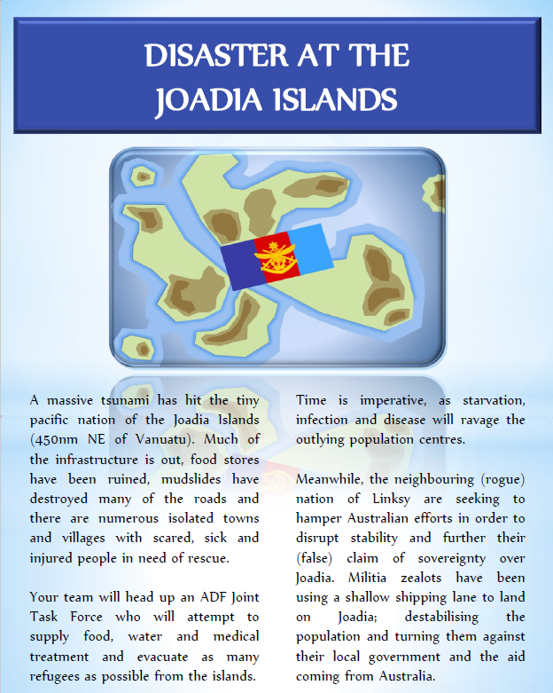
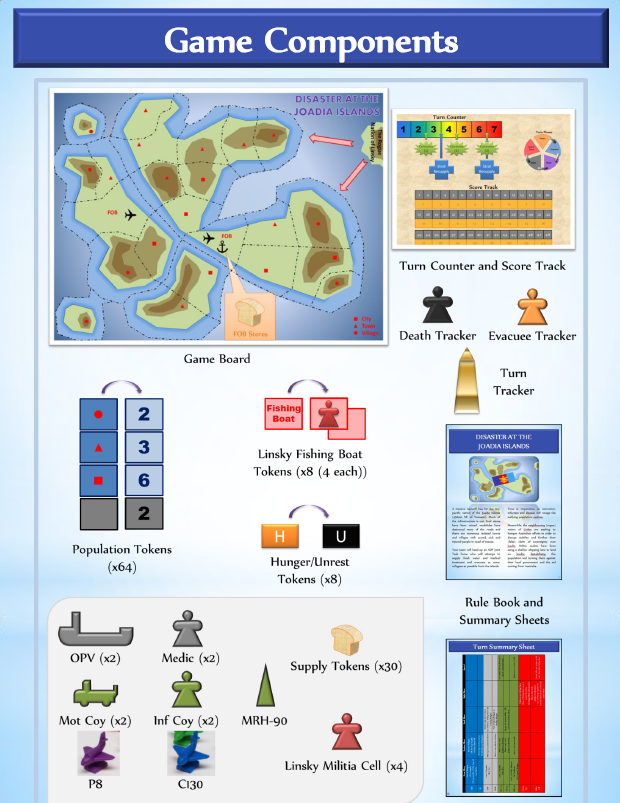

Disaster at the Joadia Islands Gameathon (in conjunction with Defence Science & Technology Group)
INTRO
In conjunction with Australian Department of Defence, DSAi is proud to announce we are hosting a Gameathon to help generate ideas around the use of AI in the field of wargaming. The term “gameathon” is a derivation of wargaming and ideathons which are a popular way to come up with new sorts of ideas with data and technology.
Defence Science & Technology Group (DSTG) has a wargame called “Disaster of the JOADIA Islands” (detailed below) and has set up 2 challenges which cover Game Design and AI Assistance. Contestants can register as individuals or as teams and create submissions for either or both challenges. DSTG and DSAi will judge the entries and award prize.

Further details on the challenges are set out below and details of terms and conditions are available here: Terms and Conditions.
BACKGROUND
Disaster of the JOADIA Islands is a turn-based wargame that models a Joint Task force assigned with the goal of rescuing civilians in a fictitious humanitarian aid disaster relief (HADR) scenario. Playing a wargame has the potential to help human decision makers with a range of decisions related to real world problem scenarios. JOADIA is the computerised version of the original board game rule sets for the purpose of conducting research into AI and machine learning agents as a means of providing enhanced decision making. JOADIA is one of our sandbox toy platforms for investigating this potential for future emerging AI decision support concepts.
Details of the rules of the game are shown here: Disaster at Joadia Islands Rulebook
.
CHALLENGES
Challenge 1 - Game Design
Design new game systems and rule sets for the original game to explore concepts applicable to a HADR scenario. Some ideas that you might like to consider include:
- Our representation of an adversarial force is currently a militia with a limited set of actions. Can you come up other actions that red force could do that would disrupt blue force’s mission? How would you model them?
- How can we design the game for better immersion? For example, can the game influence player perceptions on the loss of civilian lives?
- Think of an AI or autonomy-related technology that Disaster of the JOADIA Islands could model within the game rules. For example, what if we had autonomous drones that could deliver supplies quickly over rough terrain? How would you model this? What if the red force had AI capabilities? How could they counter blue more effectively?
- What are some modelling additional use cases that may be applicable in an HADR scenario? E.g working with non-government organisations (NGOs), disease models, social media.
Challenge 2 - AI Assistance
We are interested in exploring all the different possible ways that modern AI techniques could be used as part of wargaming for enhanced decision support. Some of the questions related to this that we are interested in exploring include:
- What are the most effective ways that we can use AI to help players think about alternate strategies available to them?
- In what ways can we use AI to help players understand the trade-offs between the different blue force unit capabilities? For example, what is the worth of one infantry unit versus one medic unit?
- How can we use AI to help in analysing the decisions made by human players? Are there any novel visualisations or maybe “intelligent” playback mechanisms that would help most effectively in this area?
- How could AI be used to modify the game rules to better explore the space of HADR decision-making?
TIMEFRAMES
The following dates show the timeframe for submissions and judging:
- November 9th - Entries open to the public
- November 23rd - Frequently Asked Questions to be answered in post on this events page
- December 7th - Entries close
- December 14th – Final presentations to judges
- December 21st – Final judging completed and winners announced
SUBMISSIONS
If interested, entrants must fill in the following Google Form: TBA
Details of what is required are shown in the Terms and Conditions.
Additionally, entrants must provide answers to the above challenge in either Word, PDF, PPT as attachments to their submissions.
Separate documents must be provided for challenge 1 and 2.
These must be submitted to the following DSAi email address: events@dsai.org.au.
PRIZES
There are 1st, 2nd and 3rd place prizes for each challenge in the sums of $1,000, $500 and $250.
If teams are created then the prizemoney is divided amongst each member.
Register Here